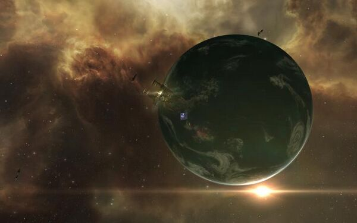

Public:Katia15 Jesters Trek
Jester's Trek
{kind=link}
“Goodbye, stranger, it’s been nice. Hope you find your paradise. Tried to see your point of view. Hope your dreams will all come true.” – “Goodbye Stranger”, Supertramp as performed by Goldey
08.06.yc116 (2014) Saisio System < Okomon Constellation < The Forge Region
“Not bad for a god.” I heard the voice below and behind me say. I smiled without looking to see who it was. No need, I knew the voice to be that of my home station maintenance chief. He continued, “Wasn’t expecting you back so soon, Ma’am.”
“Wasn’t expecting to be back, Chief.” I replied.
{kind=link}
“Are you… are you actually doing what I think you’re doing?” He asked.
I stopped for a moment, leaned back and took in my handy work. “I am.”
He chuckled, “You know we have drones for that, right?”
“I do.” Dipping my brush in the can of paint next to me, I carefully wiped off the excess on the inside of the opening. The work was tedious, but relaxing. If it wasn’t for the lack of adequate ventilation and air conditioning in the open hanger, it would have been enjoyable.
“Not much for words today are ya.” He stated without questioning. I could sense his desire to jab at me some more, but could tell he realized this wasn’t a good time. The chief and I go way back. He watched me grow-up, having served with my Grandfather in the Caldari Navy. They had been best of friends and when my Grandfather passed away, the chief had taken over that role. That was long before I had become – a god – as he puts it. “Well… sorry kiddo, I’ll leave ya be.”
{kind=link}
He started to turn away before I stopped him, “No – it’s alright Chief.” Laying down the brush along the top of the can, I wiped the sweat off my brow then half turned around so I could see him fully. I tried to smile to reassure him I was fine. “It’s just I had read about him retiring and I was… well… just sad to hear about it, really.”
“Ripard Teg, you mean.” Again it wasn’t a question as any capsuleer or space crew knew of him. “Yeah, damn shame really, but most good things never last.”
A sudden familiar sense of loss sunk in the pit of my stomach as I thought of my Grandfather and the recent loss of my father. I swallowed hard then tightened my jaw before finally relaxing then quietly replied. “Yeah…”
{kind=link}
“Well except maybe for you.” He added quickly, trying to lighten the mood, but seeing it hadn’t worked so well. “Hey, I’m sorry kiddo, it’s just…”
“I know.” I raised my hand to stop him and smiled warmly for his concern, “Listen, Chief, I’m about a month away from finishing up my exploration of Empire space so you know what that means?”
He nodded, frowned slightly, and even with the distance between us, I could see the concern in his eyes. “You’ll be heading into Nullsec. Yeah, I know. What do you need from me?”
{kind=link}
“Diplomatic contacts.” I stated flatly.
“You’re gonna need a lot more than that.” He placed his hands on his hips as if he were about to lecture me.
Holding up both hands in surrender, I chuckled, “I’m joking Chief. I just need you to have the Tengu ready to go.”
“She’s ready.” He crossed his arms, taking a stance of denial. “You sure about this?”
“I’m sure and it’s a him.” I turned back to my handy work painted on the side of the Tengu hull and smiled. “Jester’s Trek.”
Jester’s Trek Exploration Tengu Fit of the Week
Statistics 1,624 systems explored making that 29.9% of New Eden with no ship losses so far. 
{kind=link}
Comments
"I really enjoy your writing style, and these IC stories are cool. 🙂" - Suzariel Kel-Paten
"This was a great read! Very well written!" - Mynxee
"Wow. A really great take on responding to, and honouring, Ripard’s blog departure." - Motoko Rei